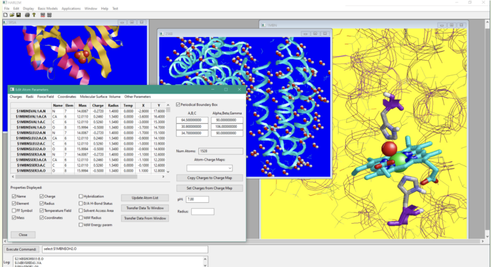

Software
HARLEM – HAmiltonians for Research of LargE Molecules

Harlem is a highly modular multy-representation molecular modeling and analysis tool with graphical interface (GUI), as well as a front and back ends for the major molecular modeling engines, such as AMBER and Gaussian. HARLEM recognizes a range of molecule formats: PDB, XYZ, MOL2, HIN. Interfaced with Python 3.9 for scripting and extensibility.
Other Software we use:
- AMBER
- Gromacs
- GAUSSIAN
- Autodock VINA
- OpenEye
- AMPAC GUI = Gauss View
- Pymol
- VMD
- TensorFlow